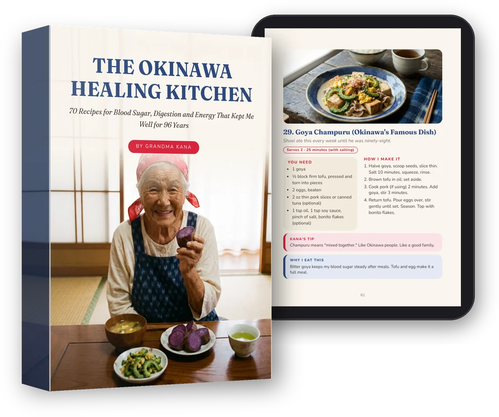
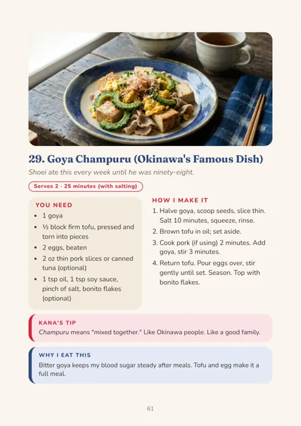
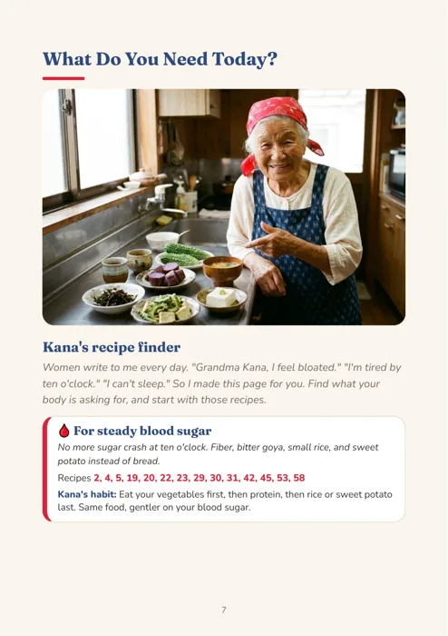
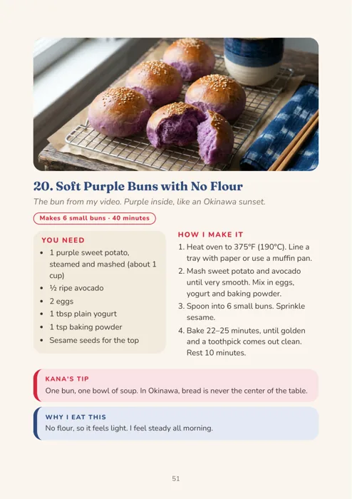
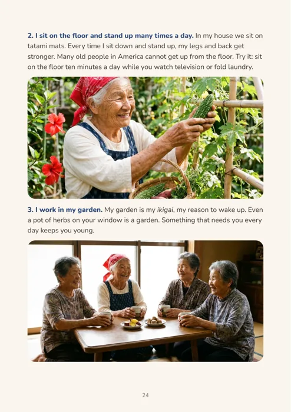
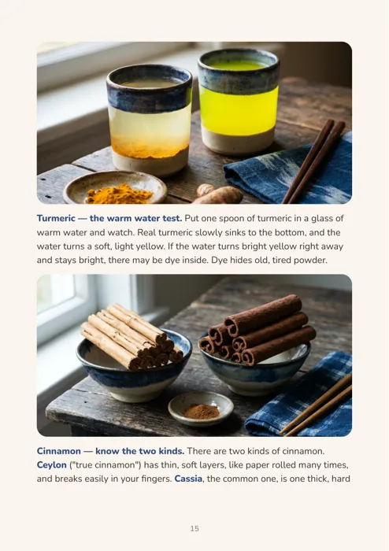
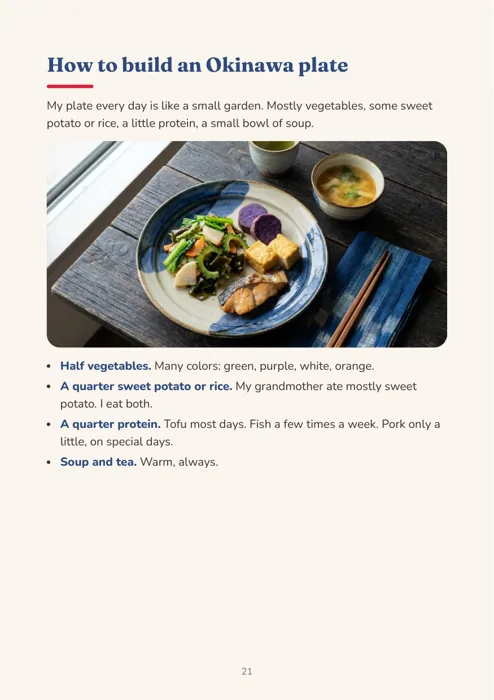
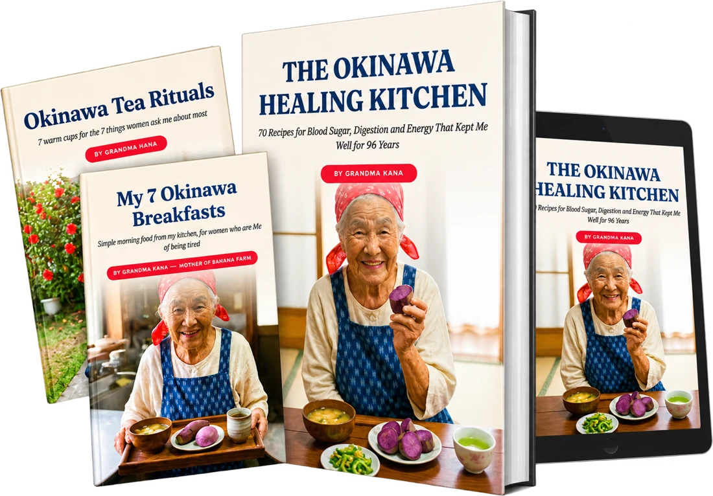
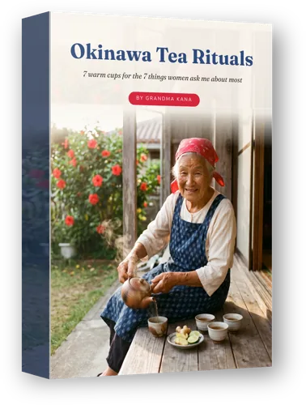

From Grandma Kana's kitchen in Okinawa
70 simple recipes and the daily habits a 96-year-old Okinawa grandma has used her whole life, made with food from your American supermarket.

Is this for you?
"I'm tired by ten o'clock." "I feel bloated after every meal." "I can't sleep." "My joints ache in the morning." Kana made this book so you can open it, find your problem, and start cooking tonight.
Look inside
Every recipe has its own page with a photo, a short ingredient list, numbered steps and a tip from Kana. Large clear letters. Nothing complicated.






Breakfasts, soups, purple sweet potato, goya, tofu, fish, rice bowls, teas and little sweet things. 9 chapters.
11 common problems, from blood sugar to bloating to sleep, each with the recipes and the habit Kana uses.
The Okinawa eating habit, in 7 easy steps you can start at dinner tonight.
The small things she does every day besides eating, from the morning walk to getting up from the floor.
Where to find each ingredient and what to use if your store doesn't have it. Plus a 7-day starter menu and a shopping list.
Kana's 7 simple morning meals for women who are tired of being tired. Included free with your book.
A letter from my kitchen
I was born in 1930 in a small village in the north of Okinawa. We had no supermarket and no refrigerator. We ate what grew in the garden and what came from the sea: sweet potato, goya, seaweed, tofu, a little fish.
My granddaughter Mia lives in America. She told me the women there are tired. They eat fast, standing up. They feel heavy and don't know why. So I wrote down my seventy recipes, all of them made with things you can buy in your supermarket.
No secret powder. Simple food, slowly, and not too much.
With love, Kana 🌺
What readers say
"I started with the miso breakfast and the 'eight parts full' trick. By the second week my 3 p.m. crash was gone. The recipes are so easy I cook them after work."
"The recipe finder is my favorite part. I went straight to 'bloating' and made the soups. My stomach feels so much calmer in the evening."
"I printed it and keep it in the kitchen. My husband now asks for the purple buns every Saturday. It feels like cooking with a grandmother."
Today only

Okinawa Tea Rituals is an optional add-on ($7) at checkout.

Cook from the book for a whole month. If you don't feel it was worth it, send one email and you get every cent back. No questions, and you keep the PDF.
Right after payment you get an email with the download link. It's a PDF you can read on your phone, tablet or computer, or print at home.
Yes. The book has a full pantry guide: where each ingredient is (most are in any supermarket) and what to use if you can't find it.
No. Most recipes take 10 to 25 minutes, use one pot and 4 to 7 ingredients. Kana wrote them for her granddaughter, who also didn't cook.
No counting and no forbidden foods. It's a way of eating: more vegetables, sweet potato, soy, fish and tea, in small bowls, slowly.
That's how Kana says it begins. One bowl. Next week, one more.
Yes, I want Kana's recipes · $17